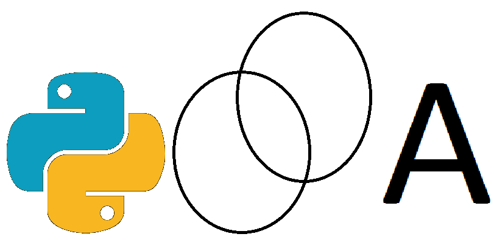

Welcome to the PyDDA documentation!#
{kind=link}
This is the main page for the documentation of PyDDA. Below are links that provide documentation on the installation and use of PyDDA as well as description of each of PyDDA’s subroutines.
System Requirements#
This works on any modern version of Linux, Mac OS X, and Windows. For Windows, HRRR data integration is not supported. In addition, since PyDDA takes advtange of parallelism we recommend:
An Intel machine with at least 4 cores
8 GB RAM
1 GB hard drive space
While PyDDA will work on less than this, you may run into performance issues. In addition, we do not support Python versions less than 3.9. If you have an older version installed, PyDDA may work just fine but we will not provide support for any issues unless you are using at least Python 3.9.
Installation instructions#
The GitHub repository for PyDDA is available at:
We do not support Python versions less than 3.9. If you use earlier Python versions, be aware, there is no testing done for these versions so problems may arise!
In order to use the HRRR data constraint, cfgrib needs to be installed. cfgrib currently only works on Mac OS and Linux, so this is an optional dependency of PyDDA so that Windows users can still use PyDDA. In order to install cfgrib, simply do:
pip install cfgrib
There are multiple ways to install PyDDA. The recommended way to install PyDDA is through the use of the Anaconda package manager. If you have anaconda installed simply type:
conda install -c conda-forge pydda
This will install PyDDA and all of the required dependencies. You still need to install cfgrib if you wish to read HRRR data. If you do not have anaconda, you can still install PyDDA using pip. Running this command will install PyDDA and the required dependencies:
pip install pydda
If you wish to contribute to PyDDA, you should install PyDDA from source. To do this, just type in the following commands assuming you have the above dependencies installed.
git clone https://github.com/openradar/PyDDA
cd PyDDA
python setup.py install
Finally, PyDDA now supports using Jax and TensorFlow for solving the three dimensional wind field. PyDDA requries TensorFlow 2.6 and the tensorflow-probability package for TensorFlow to be enabled. In addition, both of these packages can utilize CUDA-enabled GPUs for much faster processing. These two dependencies are optional as the user can still use PyDDA with the SciPy ecosystem. The Jax optimizer uses the same optimizer as SciPy’s (L-BFGS-B).
Known issues#
The TensorFlow engine uses the unbounded version of this optimizer which removes the constraint that the the wind magnitudes must be less than 100 m/s. The removal of this constraint can sometimes result in numerical instability, so it is recommended that the user test out both Jax and TensorFlow if they desire GPU-accelerated retrievals.
Contents:
- User Guide
- Overview
- Reading in Radar Data in Native Radial Coordinates
- Radar Data Quality Control - Dealiasing
- Converting the radar data to Cartesian coordinates with Py-ART
- Retrieving your first wind field
- Optimizing your wind retrieval
- Visualizing the wind retrieval
- Retrieving your first wind field
- Optimizing your wind retrieval
- Contributor’s Guide
- PyDDA Example Gallery
- Developer Reference Manual
Further support#
We are now requesting that all questions related to PyDDA that are not potential software issues to be relegated to the openradar Discourse group <openradar.discourse.group> with a ‘pydda’ tag on it. This enables the entire open radar science community to answer questions related to PyDDA so that both the maintainer and users can answer questions people may have.